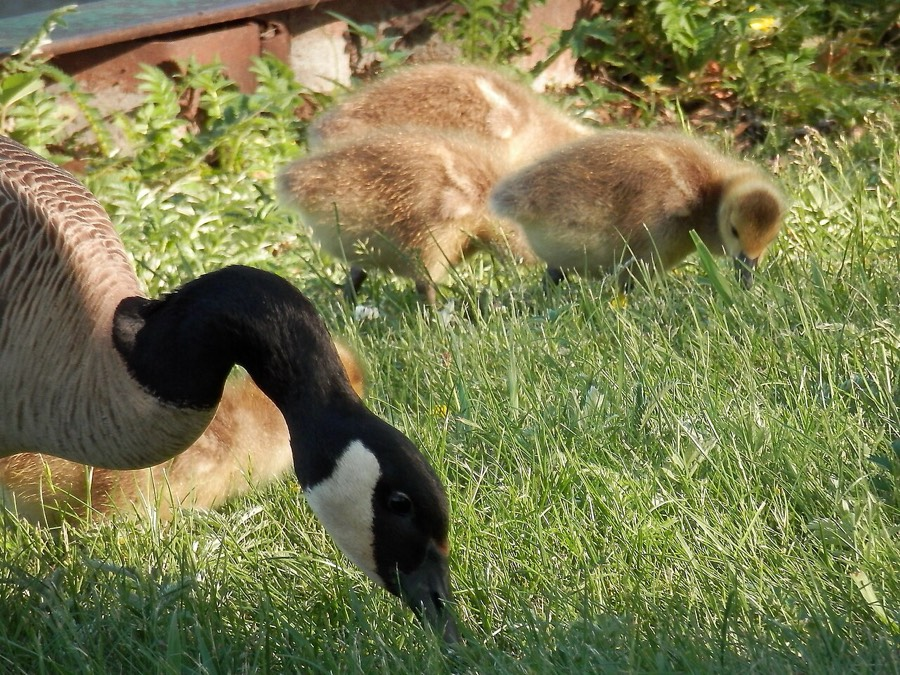

Canada Goose
Branta canadensis
- Also called
- Canada geese
- Kind
- bird
- Native to Vermont
- yes
- Legal status
- State rank S5N (Vermont Breeding Bird Atlas). A resident breeding population and a fall migrant; the Atlas notes a special hunting season on resident geese (first held 1998) and egg and nest destruction permits in problem areas. (checked 2026-11-01)
Listen
Call, 37 seconds long; this plays the first 25 seconds and needs an internet connection. Recording by Jonathon Jongsma, CC BY-SA 3.0, on Wikimedia Commons (opens the whole recording).
Pictures

Names
Canada Goose (Branta canadensis).
Range and habitat
Statewide: the Atlas says the spread of breeding Canada geese has been truly statewide, even into remote blocks of the Northeast Kingdom (an increase from 8 to 136 blocks between the two atlases); in 2008 the resident population was estimated at 10,000. Habitat: lakes, ponds, marshes and fields; the Atlas names farm ponds, beaver ponds and golf courses, and says the geese rest and nest on or near water and feed in upland habitats such as winter wheat, harvested cornfields, golf courses and lawns. The Champlain Valley checklist lists it in all four seasons.
How to identify (by season; look-alikes and the key difference)
About the size of a heron: 30 inches to 4 feet long (76 cm to 1.2 m), wingspan 4 to 5.5 feet, weight 6 to 20 pounds (Audubon). A black head and neck with a white chinstrap; the body ranges from white-chested to very dark by population. Voice: loud, musical honking.
Through the year
Dates are typical for Vermont and shift with elevation and year; "approximate" means the source gave a season and the dates are a translation of it.
| When | What | Look for | What to do | Dates |
|---|---|---|---|---|
| Apr 1 to Jun 30 | nesting (watch) | Canada geese in Vermont begin nesting in April; by early May most are incubating; the earliest hatching date in the state is 8 May and nests with eggs have been found as late as the fourth week of June (Atlas). | - | stated |
| Sep 20 to Nov 30 | migration (watch) | Waterfowl migrations at Dead Creek begin in late September and continue through November; Canada and snow geese visit Dead Creek in large numbers in autumn (Fish & Wildlife brochure and checklist). Many Vermont Canada geese now stay all year (Atlas). | - | approximate |
Signs on the land (tracks, scat, browse, nests, holes, calls)
Flocks feeding on lawns, golf courses, winter wheat and harvested cornfields near water, and loud honking (Atlas, Audubon). The Atlas says the species has become a nuisance in some places.
Role in the forest (what it eats, what eats it, what it needs)
Almost entirely plants: grasses, sedges, aquatic plants, seeds, berries and cultivated grains, occasionally insects, mollusks and small fish (Audubon). Nests are usually on slightly elevated dry ground near water with good visibility; also cliff ledges, muskrat houses, trees and artificial platforms (Audubon); the Atlas adds shorelines, gravel bars and the tops of beaver houses, and says islands that lack predators are ideal. Clutches 4 to 7 eggs, incubated by the female for 25 to 28 days (Audubon); the young take two months to reach adult size and begin to fly (Atlas). Milder winters have let non-migratory Vermont geese start breeding well before the birds that migrate to the tundra to nest (Atlas).
What helps it thrive (light, soil, shelter, food and the trees it uses)
Open water for resting and for safety from predators (an island free of predators is ideal), nearby grass, lawn or grain fields to eat, and a gently raised nest site with a clear view. The Atlas lists the shift toward permanent, non-migratory residence, and milder winters, among the reasons for the 1,600-percent rise in occupied blocks. The sources read do not say what Vermont landowners can do to attract geese, and the Atlas treats the growing resident population as a problem to be controlled.
Managing for it (habitat practices) and living with it (conflicts and damage)
The Atlas says continued growth of the resident population is expected and that additional control may be needed locally; it names a dedicated special hunting season on resident geese and federal permits for egg and nest destruction. Nesting geese and their young should be left alone (see the Legal status). Ducks, geese and mergansers have hunting seasons set each year by Vermont Fish & Wildlife in three zones (Lake Champlain, Interior Vermont and Connecticut River). The 2024-25 dates and bag limits are in the Department's 2024 Waterfowl Program Legislative Report (read as text 2026-11-01); they change each year, so check the current Vermont hunting regulations before acting on them. See Waterfowl and Migration in Vermont for the Vermont season table, where to watch, and what helps waterfowl on your land.
Legal status
Native birds are covered by the federal Migratory Bird Treaty Act, which prohibits taking (killing, capturing, selling, trading and transport are named) protected migratory birds without prior authorization (U.S. Fish and Wildlife Service page, read through a summarizing fetch 2026-10-31). The Act applies to native species named in the treaties (50 CFR 10.13); that list was not checked for this species. The Atlas does not say whether a permit is needed for each egg or nest action in Vermont; ask Vermont Fish & Wildlife or the Fish and Wildlife Service before acting on a nest.
Sources
- Vermont Center for Ecostudies, Vermont Breeding Bird Atlas, Canada Goose: http://val.vtecostudies.org/projects/vermont-breeding-bird-atlas/canada-goose/ (summarizing fetch 2026-11-01)
- Second Vermont Breeding Bird Atlas (2003-2007), Canada Goose account (read as text 2026-11-01): https://media.vtecostudies.org/wp-content/uploads/2026/08/03141656/Canada_Goose_vbba2.pdf
- Audubon, Canada Goose: https://www.audubon.org/field-guide/bird/canada-goose (summarizing fetch 2026-11-01)
What this page is based on
Kind of source: primary-agency and atlas (Vermont Fish & Wildlife, Vermont Breeding Bird Atlas, Audubon)
What was read: Vermont Breeding Bird Atlas Canada Goose page (summarizing fetch) and its second-atlas account (read as text, 2026-11-01); Audubon Guide to North American Birds (summarizing fetch); Vermont Fish & Wildlife Champlain Valley WMA checklist and Dead Creek brochure (read as text); the 2024 Waterfowl Program Legislative Report (read as text). Audubon gives no nesting months or migration timing; the Vermont dates are the Atlas's. The photograph is from Ontario.
Last checked: 2026-11-01
Vermont land and forest reference, built 2026-11-01. Rules and dates here are summaries, not legal advice; dates shift with elevation and year. Photo and recording credits · Note: _reference/US-VT/Species/Canada Goose.md